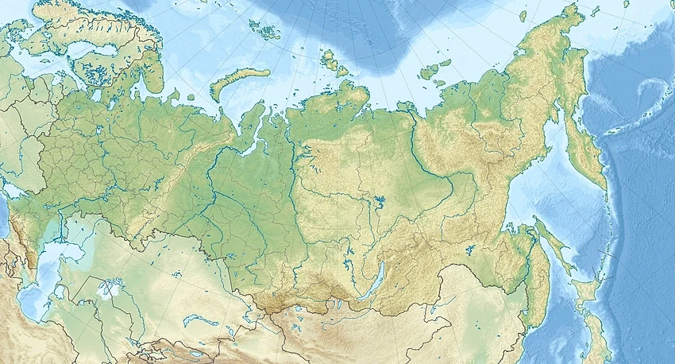
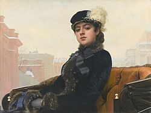

Росси́я, или Росси́йская Федера́ция[e] (сокр. РФ[f]), — государство в Восточной Европе и Северной Азии. Россия — крупнейшее государство в мире, её территория в международно признанных границах составляет 17 098 246 км². Население страны вместе с аннексированным украинским Крымом составляет 146 150 789 человек (2024; 9-е место в мире). Столица — Москва. Государственный язык на всей территории страны — русский, в ряде регионов России также установлены свои государственные и официальные языки. Денежная единица — российский рубль.
Россия — многонациональное государство с широким этнокультурным многообразием[25]. Согласно результатам переписей населения России 2010 года, а также переписи аннексированных Крыма и Севастополя 2014 года, в стране живут представители свыше 190 национальностей, среди которых русские составляют свыше 80 %, а русским языком владеют свыше 99,4 % россиян[26]. Бо́льшая часть населения (около 75 %) в религиозном отношении относит себя к православию[27], что делает Россию страной с самым многочисленным православным населением в мире.
Россия — ядерная держава[32][33][34]. Одна из ведущих космических держав мира[35][36]. Россия является постоянным членом Совета Безопасности ООН с правом вето; одна из современных великих держав мира[37]. Также Россия состоит в целом ряде международных организаций: ООН, G20, ЕАЭС, СНГ, ОДКБ, ВТО, ОБСЕ, ШОС, АТЭС, БРИКС, МОК и других.
Первое письменное упоминание названия «Росия» на греческом языке (греч. Ρωσία) датировано серединой X века и встречается в сочинениях византийского императора Константина Багрянородного «О церемониях» и «Об управлении империей» для обозначения Руси[41]. В кириллической записи слово «Росия» (Рωсїѧ) было впервые употреблено 24 апреля 1387 года[42] в собственноручной приписке митрополита Киприана к переписанной им «Лествице» Иоанна Синайского, где он именует себя «митрополитом Кыевскым и всея Росия»[43]. В XV—XVI веках эллинизированное название «Росия» закрепилось за той частью русских земель, которая была объединена в единое государство под началом Великого княжества Московского: так, Иоанн де Галонифонтибус использует это название в указанном значении в 1404 году[44], а Иван III назван «российским государем» в грамоте крымского хана в 1474 году[45].
Одна из древнейших форм русской живописи — иконопись. Она унаследовала традиции византийских мастеров, но в то же время русские иконы имеют свой собственный стиль[453]. Для них характерен не столько реализм, сколько символизм; символизм русской иконописи оказал влияние на многих художников, в частности, влияние русской иконы на своё творчество подчёркивал Анри Матисс[454]. Центральной темой в русской иконописи стала тема всепрощения.
Исторический центр Санкт-Петербурга, комплекс церквей в Кижах, Московский Кремль и Красная площадь, исторические памятники Новгорода, крепость Нарын-кала в Дербенте включены в список Всемирного наследия ЮНЕСКО. Славист и историк русской архитектуры У. К. Брумфилд выделил русское деревянное зодчество и конструктивизм как наиболее значимые достижения русской архитектуры[459]. Кроме того, в России сохранились древние постройки народов Кавказа (осетинская, рутульская архитектура); свой самобытный облик имеет татарская архитектура.